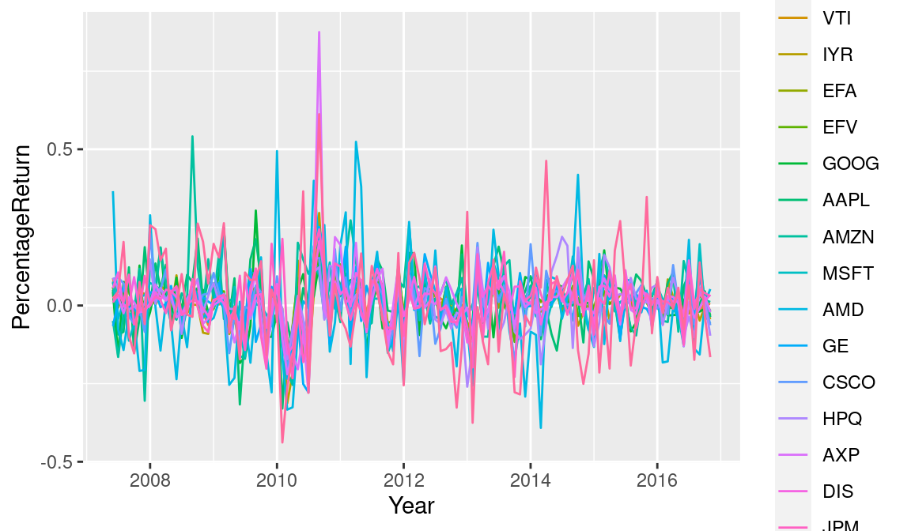
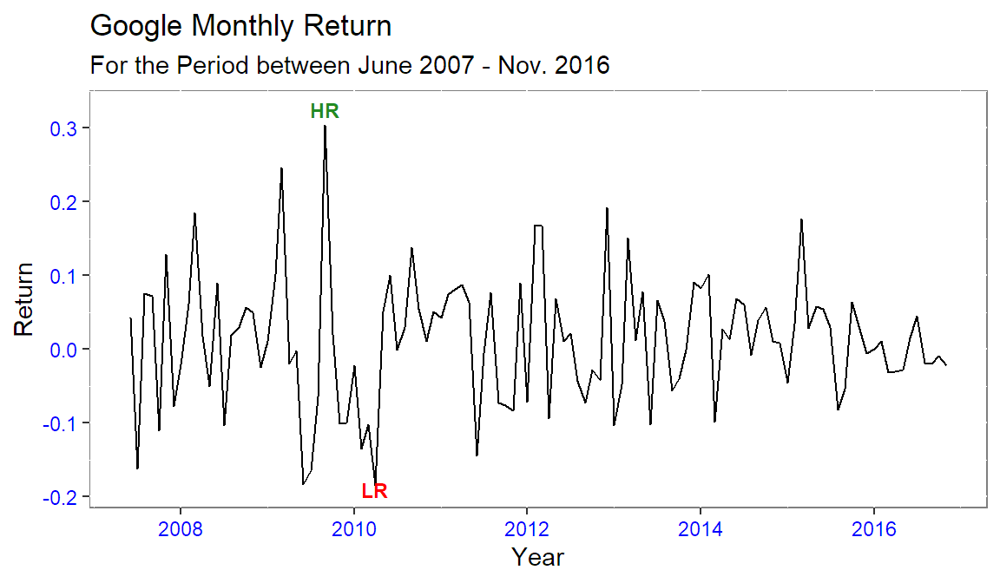
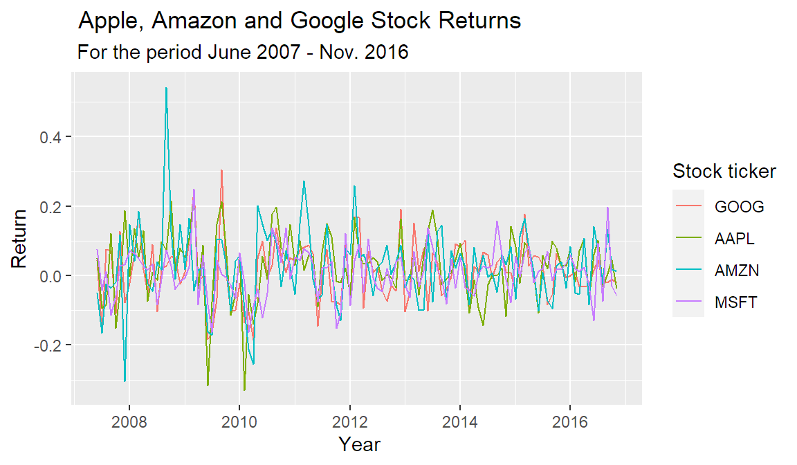

Detailed stock analysis process.
library(quantmod)
library(ggplot2)
library(xts)
library(highcharter)
library(PerformanceAnalytics)
library(dygraphs)## Dates have been loaded as a factor instead of as dates.
#There is need to convert this variable to the date class and covert the rest of the variables to xts(Extensible Time Series)
temp <- xts(x =fundreturn[,-1], order.by = as.Date(fundreturn[,1]))
# all the variables except data are coerced to xts using date as the index.
# Overwriting the fundreturn object with the xts temp object
fundreturn <- temp
str(fundreturn)An 'xts' object on 2007-06-01/2016-11-01 containing:
Data: num [1:114, 1:18] 0.024 0.0057 0.0165 0.0126 -0.0301 0.0026 0.0045 0.0218 0.027 0.0315 ...
- attr(*, "dimnames")=List of 2
..$ : NULL
..$ : chr [1:18] "SPY" "IJS" "VTI" "IYR" ...
Indexed by objects of class: [Date] TZ: UTC
xts Attributes:
NULLrm(temp) # getting rid of temp object
## Next I, stack variables of the same unique class within the same column.
#That is the returns of all the stocks in one column and the tickers in another column, indexed by the date variable.
# make use of a temporary object.
temp <- data.frame(index(fundreturn),
stack(as.data.frame(coredata(fundreturn))))
fundreturn_final <- temp# Give the variables more descriptive names
names(fundreturn_final)[1] <- "Year"
names(fundreturn_final)[2] <- "PercentageReturn"
names(fundreturn_final)[3] <- "Stockticker"
names(fundreturn_final)[1] "Year" "PercentageReturn" "Stockticker" rm(temp) # removing the temp. object
# we coerce the data frame back to xts to be able to use quantmod and highcharter
#fundreturn_final <- xts(x=fundreturn_final[-1], order.by = as.Date(fundreturn_final[,1]))ggplot(data = fundreturn_final, aes(x=Year,
y=PercentageReturn, color=Stockticker)) +
geom_line()
# Google stock Performance
# GOOG
GOOG <- subset(fundreturn_final, Stockticker=="GOOG")
g <- ggplot(data = GOOG, aes(x=Year, y=PercentageReturn)) +
geom_line()
# add features
g <- g + ggtitle("Google Monthly Return",
subtitle = "For the Period between June 2007 - Nov. 2016") +
theme(panel.background = element_rect(fill = "white",
colour = "grey50"),
axis.text = element_text(colour = "blue"),
axis.title.y = element_text(size = rel(1.0), angle = 90),
axis.title.x = element_text(size = rel(1.0), angle = 360))
g <- g + labs(x = "Year",
y ="Return")
g + annotate("text",x=as.Date("2009-09-01"),
y=0.3245,label="HR",
fontface="bold",size=3,
colour = "forestgreen") +
annotate("text",x=as.Date("2010-04-01"),
y=-0.1900,label="LR",
fontface="bold",size=3,
colour ="red") 
# Portfolio Performance Appraisal
# Having the following portfolio
# Google = GOOG, Amazon = AZMN,Apple = AAPL JP Morgans = JPM, Microsoft = MSFT, General Electric = GE, and Hewlett Packard = HPQ
#, "GE", "HPQ"
p1 <- subset(fundreturn_final, Stockticker =="AMZN")
p2 <- subset(fundreturn_final, Stockticker =="MSFT")
p3 <- subset(fundreturn_final, Stockticker =="AAPL")
p4 <- subset(fundreturn_final, Stockticker =="GOOG")
portfolio <- rbind(p1,p2,p3,p4) # binding the returns into one returns variable
rm("p1","p2", "p3","p4") # Removal of the temp. subsets
# quick visual representation of the data
p <- ggplot(data = portfolio, aes(x = Year, y =PercentageReturn, colour = Stockticker))+geom_line()
p + labs(
x = " Year",
y = "Return",
colour = "Stock ticker") +
ggtitle(" Apple, Amazon and Google Stock Returns",subtitle =" For the period June 2007 - Nov. 2016")
#Dygraphing
p1 <- subset(fundreturn_final, Stockticker =="AMZN")
p2 <- subset(fundreturn_final, Stockticker =="MSFT")
p3 <- subset(fundreturn_final, Stockticker =="AAPL")
p4 <- subset(fundreturn_final, Stockticker =="GOOG")
# Converting to xts before graphing
AMZN <- xts(x = p1[,c(-1,-3)], order.by = p1[,1])
MSFT <- xts(x = p2[,c(-1,-3)], order.by = p2[,1])
AAPL <- xts(x = p3[,c(-1,-3)], order.by = p3[,1])
GOOG_ <- xts(x = p4[,c(-1,-3)], order.by = p4[,1])
rm("p1","p2", "p3","p4") # Removal of the temp. subsets merged_returns <- merge.xts(AMZN,MSFT,AAPL,GOOG_) # merging the separate share returns into one xts object.
dygraph(merged_returns, main = "Amazon v Microsoft v Apple v Google") %>% # Using pipes to connect the codes
dyAxis("y", label ="Return") %>%
dyAxis("x", label ="Year") %>%
dyOptions(colors = RColorBrewer::brewer.pal(4, "Set2")) # Let's now evaluate the portfolio
## Part of the code is adapted from Jonathan Regenstein from RStudio
# We assume an equally weighted portfolio. Allocating 25% to all the stocks in our portfolio
w <- c(.25,.25,.25,.25)
# We use the performanceAnalytics built infuction Return.porftolio to calculate portfolio monthly returns
monthly_P_return <- Return.portfolio(R = merged_returns, weights = w)
# Use dygraphs to chart the portfolio monthly returns.
dygraph(monthly_P_return, main = "Portfolio Monthly Return") %>%
dyAxis("y", label = "Return")# Add the wealth.index = TRUE argument and, instead of returning monthly returns,
# the function will return the growth of $1 invested in the portfolio.
dollar_growth <- Return.portfolio(merged_returns, weights = w, wealth.index = TRUE)
# Use dygraphs to chart the growth of $1 in the portfolio.
dygraph(dollar_growth, main = "Growth of $1 Invested in Portfolio") %>%
dyAxis("y", label = "$")# Calculating the Sharpe Ratio
# Taking the US 10 Year Treasury Rate of 2.40% as the risk free rate.
# Making use of the built in SharpeRatio function in Performance Analytics package.
print(sharpe_ratio <- round(SharpeRatio(monthly_P_return, Rf = 0.024), 4)) portfolio.returns
StdDev Sharpe (Rf=2.4%, p=95%): -0.0634
VaR Sharpe (Rf=2.4%, p=95%): -0.0424
ES Sharpe (Rf=2.4%, p=95%): -0.0298Citation
BibTeX citation:
@online{simumba2017,
author = {Aaron Simumba},
editor = {},
title = {Stocks {Portfolio} {Analysis}},
date = {2017-03-17},
url = {https://asimumba.rbind.io//blog/stock-returns},
langid = {en}
}
For attribution, please cite this work as:
Aaron Simumba. 2017. “Stocks Portfolio Analysis.” March 17,
2017. https://asimumba.rbind.io//blog/stock-returns.